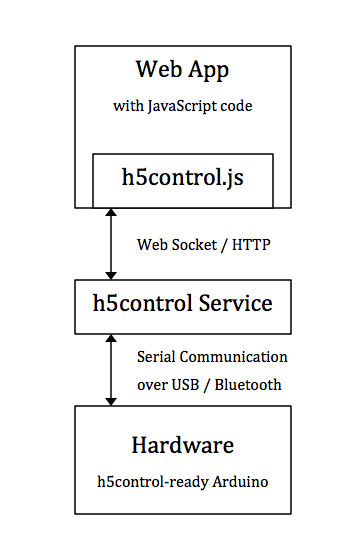
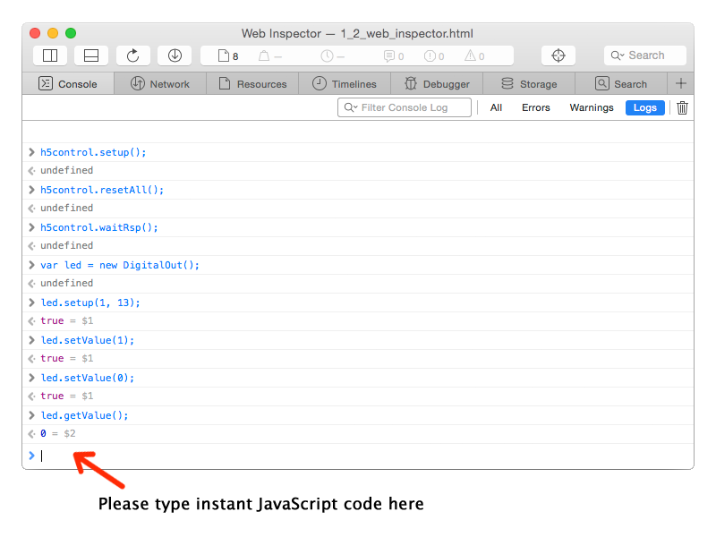

在运行你的第一个 web app 来控制你的设备前，仍需要首先确认在你的电脑操作系统 ( Mac OS X、Windows 或 Linux ) 中已启动了 h5control Service 程序。这个服务程序将在你的硬件和 web app 间建立桥接。 h5control service 是一个数据网关，一方面能够通过 USB / bluetooth 串口与你的硬件建立通信， 另一方面又能够同时通过 web socket 和 http 请求来向你的 web 页面传送字节数据。

通过制作 HTML5 web app, 开发者可以将智能控制逻辑和 UI 界面设计都放在同一个软件容器内。h5control 框架为驱动各硬件组件提供了所需的全套支持。 开发者可以在 html 中轻松地编写脚本程序，用与控制普通页面文档对象一样的方式来控制硬件对象。
JavaScript 是宿主在你的浏览器上的脚本语言。为了获得控制你的硬件设备的所有功能，一个名为 h5control.js 的文件必须被包含在你的网页中。 请在你的 html 源代码内添加以下这行代码。就此，与你的硬件建立对话所需的类库就已就绪了。
<script type="text/javascript" src="h5control.js"></script>
在进行 web app 开发时，主流 web 浏览器，例如 Chrome、Safari、Firefox 或 Edge 都提供了一个非常好用的名为 Web Inspector 的开发工具。 可以非常便利地在浏览器中使用 Web Inspector 来在线调试你的 web app 中的 JavaScript 代码。 设置断点、单步执行代码、监视变量，所有这些都可以通过 Web Inspector 获得。

现在，请在 Web Inspector 窗口中选择 “控制台” 选项卡，您可以在即时命令框中键入 JavaScript 代码。 按下回车键后，代码将立即执行。 Web Inspector 控制台与命令行环境非常相似，您可以在其中以交互方式执行命令，来调用你的硬件。 让我们开始尝试一些基本的 h5control JavaScript 命令并熟悉一下 h5control 编程。
h5control.setup();
h5control 是在 h5control.js 中声明的全局对象。 通常，在做任何设备控制前需要首先调用 setup() 函数来初始化 h5control 的系统环境。 这时 h5control.js 将调用 h5control 服务，以创建与硬件的连接。
h5control.resetAll();
执行 h5control.resetAll() 将重置所有被连接的硬件并清除设备中的配置。 设备重置后，h5control 会重新写入新的配置。
var led = new DigitalOut();
执行此代码行，将声明一个新的 DigitalOut 对象，以对应 Arduino 上的板载 LED 灯。 在对硬件上的真实组件进行配置和操控之前，这样的对象声明是必须要有的。
led.setup(1, 13);
现在，需要通过调用 led 对象的 setup() 函数来配置硬件。 该函数中需要设置了两个参数，第一个参数是 Unit ID，第二个参数是引脚号。
每个支持 h5control 的设备都必须具有一个 Uint ID 作为设备地址。 实际上，一台电脑上的任何 h5control app 应用都可以同时连接多个设备。
必须为每个设备分配一个唯一的设备ID，这样就可以在 h5control 应用程序中识别不同的设备了。
然而在大多数 h5control 应用场景中，一般也仅需要连接一个设备。 这样的话，设备单元 ID 通常使用默认编号即可，出厂默认设置中的单元 ID 始终为 1。
在这个测试中我们需要用到 Arduino 上的板载 LED，这颗 LED 与引脚 13 是相连的，因此第二个参数被设置为 13。
led.setValue(1);
调用函数 setValue() 来打开或关闭 LED。 在示例中，led 是一个 DigitalOut 对象。 setValue 函数具有一个能影响数字量输出状态的参数，该参数值可以被设置为 1 或 0。
led.getValue();
调用函数 getValue() 来获得 LED 状态。
通常，h5control 采用异步模式来调用硬件，以便使程序获得最高的运行效率。
所以你应该不会在该函数的返回值中找到任何内容。
作为另行方法，你还不得不通过为 led.whenGetValue() 设定一个回调函数来接收 LED 状态。
稍后我们将详细介绍 h5control 编程的事件回调规则，不过在此先向你展示另外一种在函数返回值中直接获取结果的方法，它看起来更简便易用。
h5control.waitRsp();
执行 h5control.waitRsp() 以禁用异步调用模式。
这样一来，执行任何函数都将始终等待一小会儿时间，会在确认硬件调用完全结束后才以函数返回值的形式回传输出结果数据。
waitRsp 的意思就是 "wait for response" (等待回应) 。
现在, 请再次调用 led.getValue()，LED 的状态值便会立即返回。
h5control.nowaitRsp();
执行 h5control.nowaitRsp() 以再次启用异步调用模式。
这样一来，任何函数的执行都不会需要等待硬件调用结束。
nowaitRsp 的意思就是 "no wait for response" (不等待回应)。
重要的是 nowaitRsp 是默认模式，它将使你的程序运行效率更高。